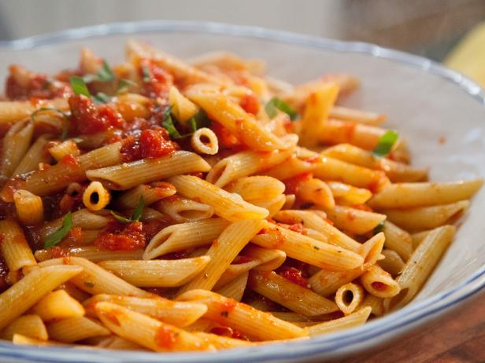

Penne Arrabiata

Description
This is one of my favorite recipes
Ingredients
- 500g Penne (Barilla)
- 1x Red Chile
- 1x Can diced tomatoes
- 1x Clove garlic
- 1x tbs dried oregano
- Salt for water
- Olive oil
Steps
- Bring water to a boil in a large pot. Add salt
- Cut chile and garlic
-
Heat up olive oil in a small pot and add chile and garlic. Don't
let the garlic burn!
-
And the can of tomatoes and the oregano. Let it cook on small
flame